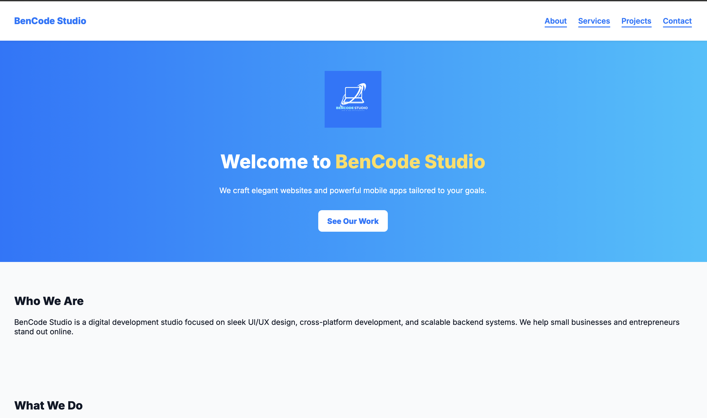

BenCode Studio Website
The Challenge
Create a single-page website to represent BenCode Studio with clear services, a modern look, and mobile responsiveness.
The Solution
Designed a smooth-scroll, AOS-enhanced one-page layout with sticky nav, back-to-top button, and mobile-friendly layout using HTML/CSS/JS.
The Results
Launched within 5 days. Visitors spend more time on the homepage and easily navigate between services and contact.
“The new BenCode Studio website feels clean, fast, and professional. Exactly what I needed to attract new clients!”
– Benedict Frimpong, Founder